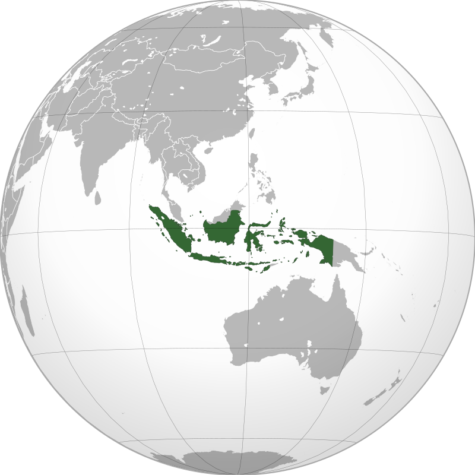

Pemandangan alam di indonesia
Letak geografis Indonesia berada di antara dua benua dan dua samudera. Kondisi tersebut ternyata memberikan pengaruh di berbagai bidang seperti sosial budaya, perairan, dan pertanian. Indonesia dikenal sebagai negara maritim dan agraris dengan berbagai keragaman yang dimiliki.
Adapun batas wilayah Indonesia berdasarkan letak geografis sebagai berikut: Utara: Selat Malaka, Malaysia Timur, Laut Cina Selatan. Selatan: Benua Australia, Timor Leste, dan Samudera Hindia. Timur: Papua Nugini dan Samudera Pasifik. Barat: Samudera Hindia. Dari letak geografis tersebut kita bisa mengetahui bahwa Indonesia berbatasan langsung dengan beberapa negara seperti Malaysia, Singapura, Filipina, Vietnam, Papua Nugini, dan Australia. Wilayah Indonesia terbentang dari Sabang di bagian barat hingga Merauke di sebelah timur. Indonesia memiliki beberapa pulau besar dan pulau kecil. Dari pulau-pulau yang dimilikinya, sebagian besar bahkan belum berpenghuni. Pulau besar di Indonesia abtara lain, Pulau Jawa, Kalimantan, Sumatera, Sulawesi dan Papua. Sementara itu beberapa pulau kecil berpenghuni yang ada di Indonesia antara lain; Pulau Nias, Siberut, Bangka, Belitung, Madura, Bali, Lombok, Flores, Ambon, dan Halmahera.
Kondisi geografis Indonesia yang terdiri dari gunung, pantai, air terjun, dan sebagainya menyajikan pemandangan alam yang indah yang cocok diabadikan dalam foto.
Keindahan alam Indonesia merupakan daya tarik yang mampu memikat wisatawan domestik dan mancanegara. Sebagai negara kepulauan, Indonesia memiliki panorama pantai, laut, gunung, air terjun, hutan, dan wisata alam lain yang memukau. Dalam Undang-Undang Nomor 6 Tahun 1996 tentang Perairan Indonesia, jumlah pulau di Indonesia mencapai 17.508 pulau. Terletak di paling barat adalah Pulau Weh di Kota Sabang, Aceh. Sedangkan pulau paling timur adalah Pulau Liki yang terletak di Kabupaten Sarmi, Papua.
Dengan kondisi geografis yang menakjubkan, terdapat banyak pemandangan alam yang dapat dinikmati. Dari pantai hingga pegunungan megah.
|

|